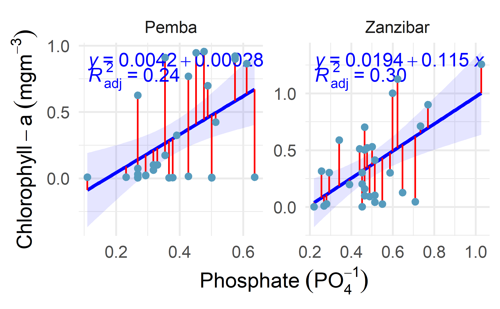
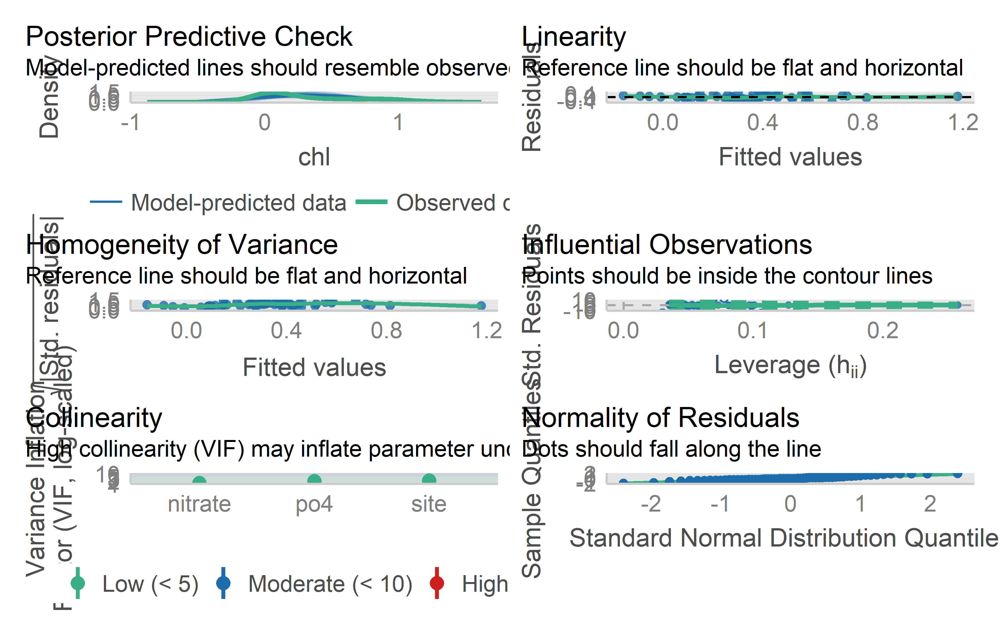

10 Multiple linear regression
In chapter (slm?), we covered the principle behind simple linear regression and you know how to interpret the results. In this chapter discuss about multiple linear regression. We also start with the underlying principle of multiple linear regression, then show how to interpret the results, how to test the conditions of application and finish with more advanced topics.
10.1 Principle
Multiple linear regression is a generalization of simple linear regression, in the sense that this approach makes it possible to relate one variable with several variables through a linear function in its parameters.
Multiple linear regression is used to assess the relationship between two variables while taking into account the effect of other variables. By taking into account the effect of other variables, we cancel out the effect of these other variables in order to isolate and measure the relationship between the two variables of interest. This point is the main difference with simple linear regression.
To illustrate how to perform a multiple linear regression in R, we use the pangani dataset than the one used for simple linear regression (mtcars). Below a short preview:

Looking on Figure fig-multiple, we see a positive relation between nitrate and chlorophyll concentration both in the Pemba and Zanzibar channels. However, someone may be interested to investigate whether there are other factors other than nitrate that could explain chlorophyll concentration in the two sites.
This is the whole point of multiple linear regression! In fact, in multiple linear regression, the estimated relationship between the dependent variable and an explanatory variable is an adjusted relationship, that is, free of the linear effects of the other explanatory variables.
Let’s illustrate this notion of adjustment by adding phosphate and sites in a linear regression model:
#>
#> Call:
#> glm(formula = chl ~ nitrate + po4 + site)
#>
#> Deviance Residuals:
#> Min 1Q Median 3Q Max
#> -0.6308 -0.1981 -0.0615 0.1364 0.6088
#>
#> Coefficients:
#> Estimate Std. Error t value Pr(>|t|)
#> (Intercept) -0.488 0.147 -3.32 0.0016 **
#> nitrate 1.499 0.258 5.81 3.1e-07 ***
#> po4 1.095 0.362 3.02 0.0038 **
#> siteZanzibar -0.308 0.110 -2.81 0.0069 **
#> ---
#> Signif. codes: 0 '***' 0.001 '**' 0.01 '*' 0.05 '.' 0.1 ' ' 1
#>
#> (Dispersion parameter for gaussian family taken to be 0.0849)
#>
#> Null deviance: 7.8850 on 59 degrees of freedom
#> Residual deviance: 4.7521 on 56 degrees of freedom
#> AIC: 28.13
#>
#> Number of Fisher Scoring iterations: 2#> We fitted a linear model (estimated using ML) to predict chl with nitrate
#> (formula: chl ~ nitrate + po4 + site). The model's explanatory power is
#> substantial (R2 = 0.40). The model's intercept, corresponding to nitrate = 0,
#> is at -0.49 (95% CI [-0.77, -0.20], t(56) = -3.32, p < .001). Within this
#> model:
#>
#> - The effect of nitrate is statistically significant and positive (beta = 1.50,
#> 95% CI [0.99, 2.00], t(56) = 5.81, p < .001; Std. beta = 0.67, 95% CI [0.45,
#> 0.90])
#> - The effect of po4 is statistically significant and positive (beta = 1.10, 95%
#> CI [0.38, 1.81], t(56) = 3.02, p = 0.003; Std. beta = 0.43, 95% CI [0.15,
#> 0.70])
#> - The effect of site [Zanzibar] is statistically significant and negative (beta
#> = -0.31, 95% CI [-0.52, -0.09], t(56) = -2.81, p = 0.005; Std. beta = -0.84,
#> 95% CI [-1.43, -0.25])
#>
#> Standardized parameters were obtained by fitting the model on a standardized
#> version of the dataset. 95% Confidence Intervals (CIs) and p-values were
#> computed using a Wald t-distribution approximation., We fitted a linear model
#> (estimated using ML) to predict chl with po4 (formula: chl ~ nitrate + po4 +
#> site). The model's explanatory power is substantial (R2 = 0.40). The model's
#> intercept, corresponding to po4 = 0, is at -0.49 (95% CI [-0.77, -0.20], t(56)
#> = -3.32, p < .001). Within this model:
#>
#> - The effect of nitrate is statistically significant and positive (beta = 1.50,
#> 95% CI [0.99, 2.00], t(56) = 5.81, p < .001; Std. beta = 0.67, 95% CI [0.45,
#> 0.90])
#> - The effect of po4 is statistically significant and positive (beta = 1.10, 95%
#> CI [0.38, 1.81], t(56) = 3.02, p = 0.003; Std. beta = 0.43, 95% CI [0.15,
#> 0.70])
#> - The effect of site [Zanzibar] is statistically significant and negative (beta
#> = -0.31, 95% CI [-0.52, -0.09], t(56) = -2.81, p = 0.005; Std. beta = -0.84,
#> 95% CI [-1.43, -0.25])
#>
#> Standardized parameters were obtained by fitting the model on a standardized
#> version of the dataset. 95% Confidence Intervals (CIs) and p-values were
#> computed using a Wald t-distribution approximation. and We fitted a linear
#> model (estimated using ML) to predict chl with site (formula: chl ~ nitrate +
#> po4 + site). The model's explanatory power is substantial (R2 = 0.40). The
#> model's intercept, corresponding to site = Pemba, is at -0.49 (95% CI [-0.77,
#> -0.20], t(56) = -3.32, p < .001). Within this model:
#>
#> - The effect of nitrate is statistically significant and positive (beta = 1.50,
#> 95% CI [0.99, 2.00], t(56) = 5.81, p < .001; Std. beta = 0.67, 95% CI [0.45,
#> 0.90])
#> - The effect of po4 is statistically significant and positive (beta = 1.10, 95%
#> CI [0.38, 1.81], t(56) = 3.02, p = 0.003; Std. beta = 0.43, 95% CI [0.15,
#> 0.70])
#> - The effect of site [Zanzibar] is statistically significant and negative (beta
#> = -0.31, 95% CI [-0.52, -0.09], t(56) = -2.81, p = 0.005; Std. beta = -0.84,
#> 95% CI [-1.43, -0.25])
#>
#> Standardized parameters were obtained by fitting the model on a standardized
#> version of the dataset. 95% Confidence Intervals (CIs) and p-values were
#> computed using a Wald t-distribution approximation.We can further assess the performance of the model using check_modelfunction in performance package
